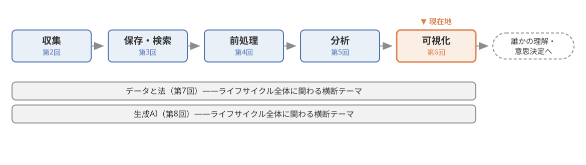
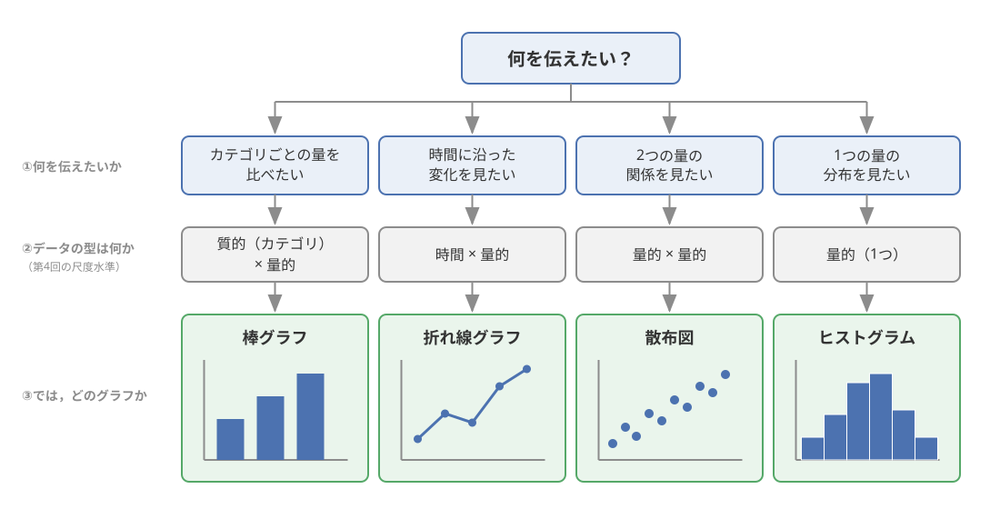
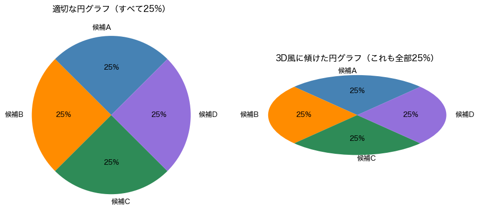
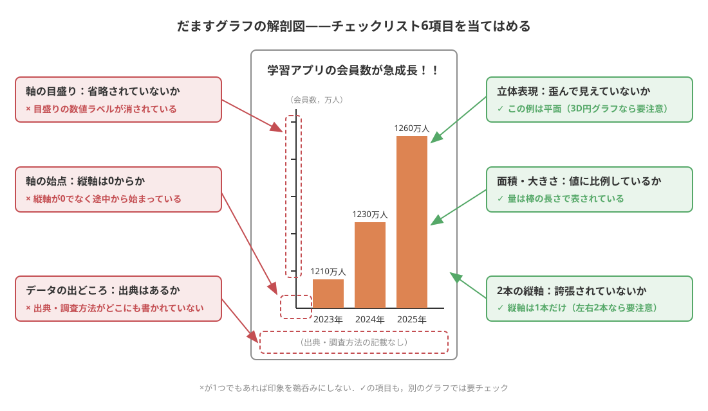
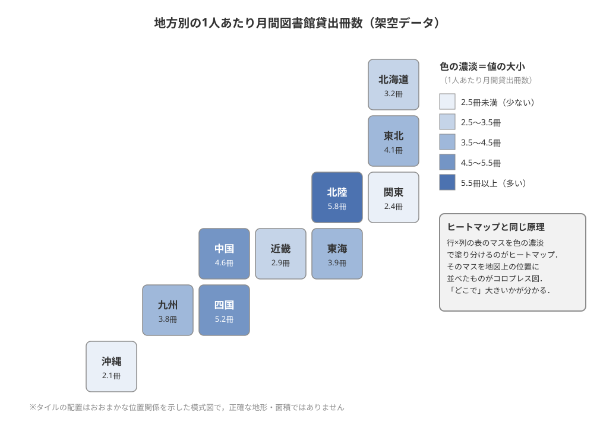

第6回：データの可視化とコミュニケーション#
この回で学ぶこと#
データ分析は「伝えて初めて価値になる」こと，すなわち可視化の意義を説明できる．
データの型（尺度水準）に応じて，棒グラフ・折れ線グラフ・散布図・ヒストグラムという基本のグラフを使い分けられる．
軸の切り取り・3D円グラフ・面積の誇張といった「だますグラフ」の代表的な手口を知り，見抜くことができる．
インタラクティブグラフ・ヒートマップ・地図上の可視化・ダッシュボードなど，可視化の広がりを知る．
グラフを読む側（消費者的リテラシー）と作る側（生産者的リテラシー）の両方の心構えを身につける．
この章には，実際に動かせるコードとその実行結果がたくさん載っています．第5回と同じく，コードを書けるようになる必要はありません．「同じデータでも描き方でこんなに印象が変わるのか」を，目で見て実感することが目標です．
本題に入る前に，本科目における現在地を 図 29 で確認しておきましょう．今回は，データのライフサイクルの最終段階にあたる回です．

図 29 本科目における現在地——データのライフサイクルの最終段階「可視化」（第6回）#
導入：SNSで流れてきた1枚のグラフ#
事例：そのグラフ，本当に「爆増」？
ある日，SNSのタイムラインにこんな投稿が流れてきたとします．
「A大学の就職率がここ3年で爆増！！ 今選ぶならA大学！」
添えられた棒グラフを見ると，たしかに右端の棒は左端の棒の3倍くらいの高さがあり，就職率がぐんぐん伸びているように見えます．ところが，グラフの縦軸をよく見ると，目盛りは「94%」から始まっていました．実際の数値を確かめると，就職率は3年間で95%から97%に変わっただけ．たった2ポイントの変化が，縦軸の描き方ひとつで「爆増」に見えていたのです．
数値そのものはウソではありません．しかし，グラフの見せ方によって，受け手の印象は大きく操作されていました．こうしたグラフは，SNSの投稿だけでなく，テレビのニュース番組，商品の広告，企業のプレゼン資料など，みなさんの身のまわりに日常的に登場します．
この事例のポイントは，「データが正しくても，グラフは人をだませる」ということです．グラフはとても強力なコミュニケーションの道具です．強力だからこそ，正しく使えば複雑なデータを一瞬で伝えられる一方，使い方を誤れば（あるいは意図的に悪用すれば）見る人の判断を狂わせてしまいます．
本章では，データのライフサイクル（収集→保存・検索→前処理→分析→可視化）の最終段階である可視化を扱います．前半では「なぜ可視化が重要か」と「データの型に応じたグラフの使い分け」を学び，中盤では本章の中心テーマである「だますグラフの見抜き方」を，コードで実際にだますグラフを再現しながらじっくり学びます．後半では，マウス操作で探索できるインタラクティブグラフや，ビッグデータの可視化といった広がりを紹介します．
なお，本章に登場する「だますグラフ」の例は，実在の報道や広告をそのまま転載したものではなく，すべて授業用に作成した架空のデータをコードで描いたものです．手口の「型」を学べば，実物に出会ったときにも応用が利きます．
可視化の意義——伝えて初めて価値になる#
分析結果は「伝わって」こそ価値になる#
第5回では，データから平均や相関といった知見を取り出す「分析」を学びました．しかし，分析して終わりではありません．分析結果は，レポートの読み手・会議の出席者・ニュースの視聴者など，誰かに伝わり，誰かの理解や意思決定を変えて初めて価値になります．どんなに優れた分析でも，数字の羅列のままでは，多くの人には伝わらないのです．
ここで登場するのが可視化（visualization）です．データや分析結果を，グラフ・図・地図などの視覚的な表現に変換することを，データビジュアライゼーション（data visualization）と呼びます．人間の目は，数字の表を読み解くのは苦手ですが，長さ・位置・傾きの違いを見比べるのは非常に得意です．可視化は，この人間の視覚の力を借りて，データを「ひと目で分かる」形に翻訳する技術だと言えます．
たとえば，100人分のテストの点数がずらりと並んだ表を渡されても，全体の傾向はすぐには分かりません．しかし，点数の分布をグラフにすれば，「平均のあたりに人が集まっているのか」「極端に低い人がいるのか」が一瞬で見て取れます．第5回で紹介したアンスコムの四重奏（統計量が同じでも分布がまったく違う4つのデータ）も，「統計量だけでなくグラフを描いて確かめよ」という教訓でした．可視化は，伝えるための道具であると同時に，分析者自身がデータを理解するための道具でもあるのです．
グラフは人を動かす——だからこそ注意が必要#
可視化が重要なもうひとつの理由は，グラフには人を説得する力があることです．PandeyらはIEEEの論文誌で，同じ内容を「文章の表」で提示した場合と「グラフ」で提示した場合とで，読み手の意見の変わり方を比較する実験を報告し，コミュニケーション手段としてのデータ可視化の説得力を実証的に検討しました [Pandey et al., 2014]．グラフは，単にデータを「見やすくする」だけでなく，読み手の態度や判断に影響を与える力を持っているのです．
この「人を動かす力」は，諸刃の剣です．正しい情報を効果的に伝えるためにも使えますが，誤った印象を植えつけるためにも使えてしまいます．だからこそ，グラフの基本的な文法（次節）と，だますグラフの手口（次々節）の両方を知っておく必要があります．
データの型と基本のグラフ#
データの型がグラフを決める#
グラフには多くの種類がありますが，やみくもに選ぶわけではありません．データの型とグラフの対応，つまり「どんな型のデータには，どんなグラフが向いているか」という基本の対応関係があります．
ここで思い出してほしいのが，第4回「データの前処理」で学んだ尺度水準です．データには，血液型や学部名のようにカテゴリを表す質的データ（名義尺度・順序尺度）と，気温や身長のように数値の大きさを表す量的データ（間隔尺度・比率尺度）がありました．どのグラフを使うべきかは，まさにこのデータの型によって決まります．
まずは，最も基本となる4つのグラフ——棒グラフ（bar chart）・折れ線グラフ（line chart）・散布図（scatter plot）・ヒストグラム（histogram）——を，役割とともに整理しましょう．
グラフ |
主な用途 |
データの型の目安 |
|---|---|---|
棒グラフ |
カテゴリごとの量の比較 |
質的データ（カテゴリ）×量的データ |
折れ線グラフ |
時間に沿った変化（推移） |
時間×量的データ |
散布図 |
2つの量的データの関係 |
量的データ×量的データ |
ヒストグラム |
1つの量的データの分布 |
量的データ |
棒グラフは，「学部別の履修者数」「店舗別の売上」のように，カテゴリごとの量を棒の長さで比べるグラフです．人間は長さの比較が得意なので，量の大小を伝えるのに最も確実な方法のひとつです．
折れ線グラフは，「月ごとの平均気温」「日ごとのSNSフォロワー数」のように，時間に沿った変化（トレンド）を線の傾きで見せるグラフです．
散布図は，「勉強時間とテストの点数」のように，2つの量的データの関係を点の散らばりで見せるグラフです．第5回で学んだ相関を確かめるときの基本の道具でした．
ヒストグラムは，「テストの点数の分布」のように，1つの量的データを区間に区切り，各区間に入るデータの個数を棒の高さで表すグラフです．棒グラフと形は似ていますが，横軸がカテゴリではなく連続した数値の区間である点が異なります．
コードで見る4つの基本グラフ#
実際に，小さな架空データで4つのグラフを描いてみましょう．まず，この章のコードで使うライブラリを読み込みます（この準備部分は折りたたんであります）．
fig = make_subplots(rows=2, cols=2, subplot_titles=(
"棒グラフ：サークル別の部員数", "折れ線グラフ：週ごとの勉強時間",
"散布図：勉強時間とテストの点数", "ヒストグラム：100人の睡眠時間の分布"))
# (1) 棒グラフ：サークル別の部員数（カテゴリ×量）
circles = ["テニス", "軽音", "写真", "茶道"]
members = [42, 35, 18, 12]
fig.add_trace(go.Bar(x=circles, y=members, marker_color="steelblue"),
row=1, col=1)
fig.update_yaxes(title_text="部員数（人）", row=1, col=1)
# (2) 折れ線グラフ：ある学生の週ごとの勉強時間（時間×量）
weeks = ["1週", "2週", "3週", "4週", "5週", "6週"]
hours = [3, 4, 6, 5, 8, 10]
fig.add_trace(go.Scatter(x=weeks, y=hours, mode="lines+markers",
line_color="darkorange"), row=1, col=2)
fig.update_yaxes(title_text="勉強時間（時間）", row=1, col=2)
# (3) 散布図：勉強時間とテストの点数（量×量）
study = [2, 3, 4, 5, 6, 7, 8, 9, 10, 11]
score = [45, 52, 55, 61, 60, 70, 74, 79, 83, 88]
fig.add_trace(go.Scatter(x=study, y=score, mode="markers",
marker_color="seagreen"), row=2, col=1)
fig.update_xaxes(title_text="勉強時間（時間）", row=2, col=1)
fig.update_yaxes(title_text="点数（点）", row=2, col=1)
# (4) ヒストグラム：100人の睡眠時間の分布（量の分布）
rng = np.random.default_rng(0) # 乱数の種を固定して毎回同じ結果に
sleep = rng.normal(6.5, 1.0, 100) # 平均6.5時間・標準偏差1時間の架空データ
fig.add_trace(go.Histogram(x=sleep, nbinsx=10, marker_color="mediumpurple"),
row=2, col=2)
fig.update_xaxes(title_text="睡眠時間（時間）", row=2, col=2)
fig.update_yaxes(title_text="人数（人）", row=2, col=2)
fig.update_layout(height=600, showlegend=False)
HTML(fig.to_html(include_plotlyjs="cdn", full_html=False))
同じ「グラフ」でも，伝えたいこと（比較・推移・関係・分布）によって適した形が違うことが分かります．なお，本章のグラフの多くは，棒や点にマウスを重ねると正確な値が表示されるインタラクティブなグラフになっています（この仕組み自体は本章の後半で紹介します）．逆に言えば，たとえば時間の推移を棒グラフでなく円グラフで描いたり，カテゴリの比較を折れ線でつないだりすると，読み手に誤った印象を与えかねません．「何を伝えたいか」→「データの型は何か」→「では，どのグラフか」 という順番で考えるのが，グラフ選びの基本です．
この考え方の順番を1枚のフローチャートにまとめたのが 図 30 です．グラフ選びに迷ったら，この図を上からたどってみてください．

図 30 基本4グラフの選び方——「何を伝えたいか」→「データの型は何か」→「では，どのグラフか」の順にたどる#
注釈
発展：色づかいへの配慮
グラフの伝わりやすさは，形だけでなく色にも左右されます．たとえば赤と緑の区別がつきにくい色覚の人は一定の割合で存在するため，色の違いだけで系列を区別させるグラフは避け，ラベルや線種・マーカーの形も併用するのが親切です．こうした配慮は「カラーユニバーサルデザイン」と呼ばれ，官公庁の資料や教科書でも広く採用されています．また，1つのグラフに左右2本の縦軸（二重軸）を設けると，2つの系列の関係が実際以上に強く（または弱く）見えてしまうため，注意が必要です．二重軸は後述の「だますグラフ」の常連でもあります [Lo et al., 2022]．
だますグラフの見抜き方#
ここからが本章の中心です．だますグラフ（deceptive visualization / misleading visualization）とは，データそのものは改ざんせずに，グラフの描き方を操作することで，見る人に実際とは異なる印象を与えるグラフのことです．「データは正しいのだから嘘ではない」と言い張れてしまうところが，数値の捏造よりもたちが悪い点です．
だますグラフは研究の世界でも真剣に分析されています．Loらは，「誤解を招く」と報告された1,000件を超える実世界の可視化を収集して分類し，74種類もの問題からなる分類学（タクソノミー）を構築しました [Lo et al., 2022]．その頻度の集計によれば，最も多かった問題は軸の切り取り（1位），次いで3D表現（2位）であり，二重軸も4位に入っています．つまり，これから学ぶ手口は「教科書の中の珍しい例」ではなく，現実世界で実際に横行している定番の手口なのです．
以下では，代表的な3つの手口——軸の切り取り・3D円グラフ・面積の誇張——を，コードで「適切なグラフ」と「だますグラフ」を並べて描きながら見ていきます．
手口1：軸の切り取り#
軸の切り取り（truncated axis）は，棒グラフの縦軸を0からではなく途中の値から始めることで，差を実際より大きく見せる手口です．導入の「就職率が爆増」の事例がまさにこれでした．最も頻繁に使われる手口です [Lo et al., 2022]．
同じデータを，縦軸を0から始めた棒グラフと，縦軸を切り取った棒グラフで並べて描いてみましょう．架空の3つのカフェの顧客満足度（100点満点）のデータです．
# 同じデータを2通りの縦軸で描く
cafes = ["カフェA", "カフェB", "カフェC"]
satisfaction = [81, 83, 85] # 顧客満足度（100点満点，架空データ）
fig = make_subplots(rows=1, cols=2, subplot_titles=(
"適切なグラフ（縦軸は0から）", "だますグラフ（縦軸を80から切り取り）"))
# 左：縦軸が0から始まる適切なグラフ
fig.add_trace(go.Bar(x=cafes, y=satisfaction, marker_color="steelblue"),
row=1, col=1)
fig.update_yaxes(range=[0, 100], title_text="顧客満足度（点）", row=1, col=1)
# 右：縦軸を80から始めた「だますグラフ」
fig.add_trace(go.Bar(x=cafes, y=satisfaction, marker_color="indianred"),
row=1, col=2)
fig.update_yaxes(range=[80, 86], title_text="顧客満足度（点）", row=1, col=2)
fig.update_layout(height=380, showlegend=False)
HTML(fig.to_html(include_plotlyjs="cdn", full_html=False))
左のグラフでは，3つのカフェの満足度は「どこもほぼ同じで，わずかにCが高い」ように見えます．これがデータの実態に近い印象です．ところが右のグラフでは，カフェCの棒はカフェAの5倍もの高さがあり，「Cの圧勝」に見えます．データは1バイトも変えていないのに，縦軸の始点を80にずらしただけで，印象が激変してしまいました．
なぜこんなことが起きるのでしょうか．棒グラフは「棒の長さ＝量の大きさ」という約束のもとで読まれるグラフです．縦軸を途中から始めると，棒の長さが量に比例しなくなり，この約束が破られます．それでも読み手の目は無意識に棒の長さを比べてしまうため，差が誇張されて伝わるのです．
この「印象の操作」は，気のせいではなく実験で確かめられています．Pandeyらは，軸の切り取りや面積による表現などの代表的な歪曲手法を用いたグラフを実験参加者に見せ，歪みのない対照条件のグラフと比べて，参加者がデータの差をどれだけ大きく知覚するかを測定しました．その結果，歪曲されたグラフを見た参加者は，対照条件よりも58.5%〜129.5%も大きく差を知覚したと報告されています [Pandey et al., 2015]．グラフの歪みは，見た人の頭の中の「事実」を，最大で2倍以上も膨らませてしまうのです．
警告
縦軸の切り取りは常に「悪」なのか？
実は，軸の切り取りがいつでも不適切とは限りません．たとえば体温の推移（35〜40℃あたりしか動かない）を0℃からのグラフで描くと，かえって大事な変化が見えなくなります．折れ線グラフで細かい変化を見せたい場合など，軸を切り取る合理的な理由があることもあります．大切なのは，(1) 棒グラフのように「長さで量を表す」グラフでは原則0から始めること，(2) 軸を切り取る場合はそのことがはっきり分かるように目盛りを明示すること，そして読む側としては，(3) グラフを見たらまず軸の始点と目盛りを確認する習慣をつけることです．
手口2：3D円グラフ——傾けるだけで割合が歪む#
3D円グラフは，円グラフを立体的に傾けて表示したグラフで，プレゼン資料などで「見栄えがする」ためによく使われます．しかし，立体的に傾けた瞬間に，各項目の割合（扇形の中心角）は正しく読み取れなくなります．実世界の誤解を招くグラフでも，3D表現は軸の切り取りに次いで2番目に多い問題でした [Lo et al., 2022]．
どれほど歪むのか，実験してみましょう．次のコードでは，4つとも全く同じ25% のデータを，普通の円グラフと，3D風に傾けた（縦方向に押しつぶした）円グラフで描いています．
# 4つとも同じ25%のデータ
labels = ["候補A", "候補B", "候補C", "候補D"]
values = [25, 25, 25, 25]
colors = ["steelblue", "darkorange", "seagreen", "mediumpurple"]
fig, axes = plt.subplots(1, 2, figsize=(10, 4.5))
# 左：普通の円グラフ
axes[0].pie(values, labels=labels, colors=colors,
autopct="%d%%", startangle=45)
axes[0].set_title("適切な円グラフ（すべて25%）")
# 右：3D風に傾けた円グラフ（縦に0.45倍に圧縮して傾きを再現）
axes[1].pie(values, labels=labels, colors=colors,
autopct="%d%%", startangle=45)
axes[1].set_aspect(0.45) # 円を押しつぶして「傾けた」見た目にする
axes[1].set_title("3D風に傾けた円グラフ（これも全部25%）")
plt.tight_layout()
plt.show()

左の普通の円グラフでは，4つの扇形はどれも同じ大きさに見えます（実際同じです）．ところが右の傾けた円グラフでは，上下にある扇形が大きく，左右にある扇形が小さく見えないでしょうか．数値ラベルはどれも25%のままなのに，見た目の面積や角度の印象はまるで違います．円を傾ける（楕円に変形する）と，扇形の中心角が場所によって歪んで見えるためです．
実際の3D円グラフでは，これに加えて手前の扇形に「厚み（側面）」が描かれるため，手前に置かれた項目はさらに大きく見えます．つまり3D円グラフでは，どの項目を手前に配置するかによって，同じデータでも印象を操作できてしまうのです．自分が発表資料を作るときは，3D円グラフは使わず，平らな円グラフか，できれば棒グラフを使うのが安全です．
手口3：面積の誇張#
面積の誇張は，数量をイラストや円の「大きさ」で表すときに起こりやすい手口です．ポイントは，値が2倍のときに半径（や高さ・幅）を2倍にすると，面積は4倍になってしまうことです．面積は縦×横で決まるため，長さを2倍にすると面積は2×2＝4倍に膨らむのです．
架空の会社の売上（昨年100億円→今年200億円，ちょうど2倍）を，円の大きさで表してみましょう．
左のグラフは，円の面積が売上に比例するように描いたものです（半径は約1.41倍）．2倍という変化が素直に伝わります．一方，右のグラフは円の半径を2倍にしたもので，面積は4倍になっています．見た目の印象は「2倍」ではなく「4倍」，つまり実際の2倍も誇張された成長に見えてしまいます．
この手口は，人のイラストの大きさで人口を表したり，硬貨の絵の大きさで金額を表したりする「絵グラフ」で特に起こりがちです．作り手に悪意がなくても，イラストを拡大するときに縦横両方を拡大してしまい，結果として面積が誇張される，というミスは頻繁に起こります．面積による量の表現は，Pandeyらの実験で扱われた歪曲手法のひとつでもあり，読み手の知覚を大きく歪めることが確認されています [Pandey et al., 2015]．
手口：二重軸（2本の縦軸）#
最後にもうひとつ，本節の冒頭の頻度集計でも上位に挙がっていた二重軸（dual axis）を見ておきましょう．二重軸とは，1つのグラフの左右に単位も範囲も異なる2本の縦軸を置き，2つの系列を重ねて描く方法です．ある店の「広告費」と「売上」の月次データ（架空）を，単位を揃えて素直に描いた2枚のグラフと，二重軸で重ねた1枚のグラフで見比べてみましょう．
# 同じ2系列（架空データ）を，素直な2枚と二重軸の1枚で描き比べる
months = [f"{m}月" for m in range(1, 13)]
ad = [100, 98, 103, 105, 102, 108, 110, 107, 112, 115, 113, 118] # 広告費（万円）
sales = [2400, 2380, 2430, 2470, 2420, 2500,
2540, 2490, 2560, 2600, 2570, 2640] # 売上（万円）
fig = make_subplots(
rows=1, cols=3, specs=[[{}, {}, {"secondary_y": True}]],
subplot_titles=("適切：広告費（縦軸は0から）", "適切：売上（縦軸は0から）",
"だますグラフ（二重軸で重ねる）"))
# 左・中央：同じ単位（万円）・同じ縦軸範囲で素直に描いた2枚
fig.add_trace(go.Scatter(x=months, y=ad, mode="lines+markers",
line_color="steelblue"), row=1, col=1)
fig.update_yaxes(range=[0, 3000], title_text="広告費（万円）", row=1, col=1)
fig.add_trace(go.Scatter(x=months, y=sales, mode="lines+markers",
line_color="darkorange"), row=1, col=2)
fig.update_yaxes(range=[0, 3000], title_text="売上（万円）", row=1, col=2)
# 右：左軸・右軸の範囲を恣意的に調整して2本の線を「重ねた」二重軸グラフ
fig.add_trace(go.Scatter(x=months, y=ad, mode="lines+markers",
line_color="steelblue"), row=1, col=3, secondary_y=False)
fig.add_trace(go.Scatter(x=months, y=sales, mode="lines+markers",
line_color="darkorange"), row=1, col=3, secondary_y=True)
fig.update_yaxes(range=[95, 120], title_text="広告費（万円）",
row=1, col=3, secondary_y=False)
fig.update_yaxes(range=[2350, 2660], title_text="売上（万円）",
row=1, col=3, secondary_y=True)
fig.update_layout(height=380, showlegend=False)
HTML(fig.to_html(include_plotlyjs="cdn", full_html=False))
左の2枚を見ると，広告費も売上も月ごとに緩やかに変動しているだけで，2つの系列の間に目立った関係は読み取れません．ところが右のグラフでは，左軸（広告費）と右軸（売上）の範囲を恣意的に調整した結果，2本の線がぴったり重なり，「広告費を増やせば売上が伸びる」という強い関係があるかのように見えます．二重軸の怖いところは，左右の軸の始点と幅を作り手が自由に決められるため，同じデータでも2本の線を「重ねる」ことも「交差させる」ことも思いのままにできてしまう点です．仮に2本の線が連動して見えたとしても，第5回で学んだとおり，それだけで因果関係があるとは言えません．二重軸のグラフを見たら，右軸と左軸それぞれの単位と範囲（目盛りの始点と幅）を確認する——これが見抜くコツです．
読む側と作る側，2つのリテラシー#
ここまで見てきた手口をふまえると，グラフとの付き合い方には2つの側面があることが分かります．
1つめは，グラフを読む側のリテラシー（消費者的リテラシー）です．SNS・ニュース・広告で目にするグラフを鵜呑みにせず，次のような点を確認する習慣です．
警告
だますグラフを見抜くチェックリスト（読む側）
軸の始点：縦軸は0から始まっているか．途中から始まっているなら，その理由は妥当か．
軸の目盛り：目盛りの間隔は等間隔か．目盛りやラベルが省略されていないか．
立体表現：3D円グラフなど，立体的な装飾で割合や量が歪んで見えていないか．
面積・大きさ：イラストや円の大きさで量を表すとき，面積が値に比例しているか．
2本の縦軸：左右で異なる縦軸（二重軸）が使われ，関係が誇張されていないか．
データの出どころ：そもそも，そのデータの出典・調査方法は示されているか（第2回の標本の偏りを思い出しましょう）．
このチェックリストを実際に使う練習として，架空の広告グラフに6項目を当てはめて「解剖」したものが 図 31 です．このグラフでは，軸の始点・軸の目盛り・データの出どころの3項目に問題が見つかります．一方，立体表現・面積・2本の縦軸のように「この例では問題なし」となる項目も，別のグラフでは要注意ポイントになります．1つのグラフに対して，6項目すべてを順に確認する使い方を身につけましょう．

図 31 だますグラフの解剖図——チェックリスト6項目を架空の広告グラフに当てはめる（データはすべて架空）#
2つめは，グラフを作る側のリテラシー（生産者的リテラシー）です．みなさんも，レポート・ゼミ発表・就職後の資料作成などで，グラフを作る側に回ります．そのとき，悪意がなくても，グラフ作成ソフトの初期設定やデザインの工夫のつもりで，結果的にだますグラフを作ってしまうことがあります．LauerとO'Brienは，実務のデザイン現場でよく使われるグラフのデザイン上の工夫（軸の操作や装飾など）がどの程度読み手を誤解させるか，また説明文の添え方が誤解をどう変えるかを実験的に検討しており，作り手の何気ない選択が読み手の理解を左右することを示しています [Lauer and O'Brien, 2020]．作る側としては，先ほどのチェックリストを「自分のグラフが破っていないか」の点検に使うこと，そして「見栄え」よりも「正確に伝わること」を優先することが大切です．
可視化の広がり——動かせるグラフからダッシュボードまで#
だますグラフの話が続いたので，最後は可視化の明るい側面，つまり近年の可視化技術の広がりを紹介します．紙に印刷された静的なグラフから，読み手が自分で操作しながらデータを探索できる表現へと，可視化は大きく進化しています．
インタラクティブグラフ#
インタラクティブグラフ（interactive graph）は，マウス操作などで読み手が操作できるグラフです．ポイントにカーソルを重ねると正確な値が表示されたり（ホバー），気になる部分を拡大したり（ズーム），凡例をクリックして系列の表示・非表示を切り替えたりできます．静的なグラフが「作り手が選んだ1つの見え方」しか提供できないのに対し，インタラクティブグラフでは読み手が自分の関心に沿ってデータを探索できます．
実際に体験してみましょう．次のグラフは，架空の大学図書館の月別入館者数を折れ線グラフにしたものです．線の上にマウスを重ねると，その月の正確な値がポップアップ表示されます．ドラッグで範囲を選ぶと拡大もできます（ダブルクリックで元に戻ります）．
import plotly.express as px
# 架空データ：ある大学図書館の月別入館者数
df = pd.DataFrame({
"月": ["4月", "5月", "6月", "7月", "8月", "9月",
"10月", "11月", "12月", "1月", "2月", "3月"],
"入館者数": [18200, 15400, 14800, 21900, 6300, 9800,
14100, 15200, 16800, 22500, 7900, 6100],
})
fig = px.line(df, x="月", y="入館者数", markers=True,
title="ある大学図書館の月別入館者数（架空データ）——マウスを重ねてみよう")
from IPython.display import HTML
HTML(fig.to_html(include_plotlyjs="cdn", full_html=False))
このグラフを操作すると，「試験期間のある7月と1月に入館者が急増し，長期休みの8月・2月・3月に激減する」という物語が，自分の手で確かめられます．インタラクティブグラフは，報道機関のウェブ記事や官公庁の統計サイトでも広く使われるようになっています．
ビッグデータの可視化：ヒートマップと地図#
データが大規模になると，1つ1つの点や棒では描ききれなくなります．そこで活躍するのが，ビッグデータの可視化の代表的な手法であるヒートマップ（heatmap）と地図上の可視化です．
ヒートマップは，行と列からなる表の各マスを，値の大きさに応じた色の濃淡で塗り分けたグラフです．数百・数千のマスがあっても，色のパターンとして全体の傾向をひと目で把握できます．次の例は，架空のカフェの「曜日×時間帯」の来店者数をヒートマップにしたものです．これもインタラクティブで，マスにマウスを重ねると値が表示されます．
色の濃い場所を眺めるだけで，「昼のピークはどの曜日にもある」「土日は全体的に混む」といったパターンが読み取れます．もしこれが数字だけの7行×12列の表だったら，同じ結論に達するまでにずっと時間がかかるはずです．
地図上の可視化は，データを地図の上に重ねて表示する手法です．都道府県ごとの統計値を色の濃淡で塗り分けた地図（コロプレス図と呼ばれます）や，スマートフォンの位置情報から得られる人流データを地図上のヒートマップとして表示する例などがあり，天気予報の雨雲レーダーも身近な例のひとつです．「どこで」何が起きているかを伝えたいとき，地図は最強の下敷きになります．
コロプレス図の考え方を模式的に示したのが 図 32 です．発想はヒートマップとまったく同じで，表のマス目が「地域の位置」に置き換わっただけです．色の濃い地域を探すだけで，「どこで」値が大きいのかがひと目で読み取れます．

図 32 コロプレス図の考え方——地域を値の大きさに応じた色の濃淡で塗り分ける（地形を簡略化したタイル表現．数値はすべて架空データ）#
ダッシュボード#
複数のグラフ・数値・地図などを1つの画面にまとめ，データの状況をひと目で監視・把握できるようにしたものをダッシュボード（dashboard）と呼びます．もともとは自動車の運転席の計器盤を指す言葉で，「車の状態が一目で分かる計器盤」のように「組織やサービスの状態が一目で分かる画面」を作ろう，という発想です．企業では売上やウェブサイトのアクセス状況を常時表示するダッシュボードが使われ，自治体や国も統計データのダッシュボードを公開しています．多くのダッシュボードは，ここまでに紹介したインタラクティブグラフ・ヒートマップ・地図の組み合わせでできています．
活用事例：社会を動かしたダッシュボード——感染症データの可視化#
事例：報道・行政・ビジネスに広がるデータビジュアライゼーション
可視化が社会の意思決定を支えた近年の代表例が，新型コロナウイルス感染症の流行時に世界中で公開された感染状況ダッシュボードです．大学・行政・報道機関などがそれぞれ，感染者数の推移を示す折れ線グラフ，地域ごとの状況を示す地図，病床の使用状況を示す指標などを1つの画面にまとめて日々更新し，世界中の人々や政策決定者が最新の状況を把握するために利用しました．日本でも国や自治体が感染状況や医療提供体制のデータを可視化して公開し，シビックテック（市民によるIT活動）のコミュニティが開発したオープンソースの対策サイトが多くの自治体に広がったことも話題になりました．
この事例は，本章で学んだ要素が総動員されたものです．時系列の推移は折れ線グラフで，地域差は地図上の可視化で，曜日ごとの検査件数の偏りはデータの読み方の注意点として説明される——まさに報道・行政・ビジネスでの活用事例の縮図でした．報道機関のデータジャーナリズム（データ分析に基づく報道）では選挙結果や家計・物価の可視化が定番となり，行政では統計ダッシュボードによる政策立案支援（EBPM：証拠に基づく政策立案）が進み，ビジネスではBI（ビジネスインテリジェンス）ツールによる売上ダッシュボードが日常的に使われています．可視化はもはや専門家の道具ではなく，社会の共通言語になりつつあるのです．
同時に，この時期には「グラフの読み方」自体も社会の話題になりました．軸の取り方や集計期間の違いで印象が変わることが広く議論され，本章で学んだ「読む側のリテラシー」の重要性が，多くの人に実感される機会にもなりました．
まとめ#
本章では，データのライフサイクルの最終段階である可視化について学びました．要点を振り返ります．
分析結果は伝えて初めて価値になる．可視化（データビジュアライゼーション）は，人間の視覚の力を借りてデータを「ひと目で分かる」形にする技術であり，読み手の判断を左右する説得力を持つ [Pandey et al., 2014]．
グラフ選びの基本はデータの型とグラフの対応．カテゴリの比較は棒グラフ，時間の推移は折れ線グラフ，2つの量の関係は散布図，1つの量の分布はヒストグラムが基本形である（第4回の尺度水準が土台になる）．
だますグラフは現実に横行しており，実世界の誤解を招く可視化を分類した研究では74種類もの手口が整理されている．頻度の上位は軸の切り取りと3D表現である [Lo et al., 2022]．歪曲されたグラフは，読み手に差を58.5%〜129.5%も大きく知覚させることが実験で確かめられている [Pandey et al., 2015]．
軸の始点・目盛り・立体表現・面積の比例関係・二重軸をチェックする習慣（消費者的リテラシー）と，自分がグラフを作るときに同じ点を点検する姿勢（生産者的リテラシー）の両方が必要である．
可視化は静的なグラフにとどまらず，インタラクティブグラフ・ヒートマップ・地図上の可視化・ダッシュボードへと広がり，報道・行政・ビジネスの共通言語になっている．
次回（第7回）は視点を変えて，データのライフサイクル全体を支えるルール，すなわちデータと法（個人情報保護・著作権など）を扱います．どれほど見事に可視化しても，そもそも集めてはいけないデータ・使ってはいけないデータであれば台無しです．「データを正しく扱う」ことの制度的な側面を学びましょう．
確認問題#
問1（事例判断型）#
ある企業の広告に，次のようなグラフが掲載されていました（架空の例です）．「当社製品の顧客満足度は他社を圧倒！」というキャッチコピーが添えられています．このグラフの問題点を2つ指摘してください．
解答と解説
問題点1：縦軸の切り取り（軸の始点が0でない）．このグラフの縦軸は85点から始まっています．棒の長さを比べると「当社」は「他社X」の4倍近くありますが，実際の満足度は86点・87点・89点で，差はわずか2〜3点です．棒グラフは棒の長さで量を表すグラフなので，縦軸は原則0から始めるべきです．
問題点2：縦軸の目盛りが消されている．このグラフには縦軸の目盛りがなく，軸が切り取られていることに読み手が気づきにくくなっています．数値ラベルは書かれていますが，棒の長さの印象が先に目に入るため，「圧倒的」という誤った印象が残ります．
このように，データ（86・87・89点）自体は正しくても，軸の描き方によって差を誇張できてしまいます．実験研究でも，歪曲されたグラフは読み手に差を58.5%〜129.5%大きく知覚させることが報告されています [Pandey et al., 2015]．グラフを見たら，まず「軸の始点」と「目盛り」を確認する習慣をつけましょう．
問2（グラフの選択）#
次の(a)〜(c)のデータを可視化したいとき，棒グラフ・折れ線グラフ・散布図・ヒストグラムのうち，それぞれ最も適切なグラフはどれでしょうか．
(a) ある授業の受講生200人のテスト得点の分布（どの点数帯に何人いるか）
(b) 学部（人文・経済・医・薬・芸術工学など）ごとの受講生数の比較
(c) 1日のスマートフォン使用時間と睡眠時間の関係（受講生50人分）
解答と解説
(a) ヒストグラム．1つの量的データ（得点）がどのように散らばっているか，つまり分布を見たいので，得点を区間に区切って人数を数えるヒストグラムが適切です．
(b) 棒グラフ．学部は名義尺度（質的データ・カテゴリ）であり，カテゴリごとの量（人数）を比較したいので棒グラフが適切です．学部に「順番」はないので，折れ線でつなぐのは不適切です．
(c) 散布図．使用時間と睡眠時間という2つの量的データの関係を見たいので散布図が適切です．第5回で学んだように，相関を調べる第一歩は散布図を描くことです．
このように，「何を伝えたいか（分布・比較・関係・推移）」と「データの型（質的か量的か）」を考えると，適切なグラフはほぼ自動的に決まります．
問3（面積の誇張）#
あるポスターで，2つの都市の人口をイラストの人型の大きさで表すことになりました．都市Aの人口は100万人，都市Bの人口は200万人です．デザイナーが都市Bの人型イラストを，都市Aの人型の「縦2倍・横2倍」に拡大して配置したとき，どのような問題が起きるでしょうか．また，どうすればよいでしょうか．
解答と解説
縦と横をそれぞれ2倍にすると，イラストの面積は2×2＝4倍になります．人口は2倍しか違わないのに，見た目の印象は4倍の差に見えてしまい，都市の規模の差が実際の2倍も誇張されて伝わります．これが本章で学んだ面積の誇張です．
対処法は2つあります．(1) 面積が人口に比例するように，縦横をそれぞれ√2倍（約1.41倍）にとどめる．(2) そもそも面積で量を表すのをやめて，長さだけで量を表す棒グラフを使う．確実に正しく伝えたいなら，(2)の棒グラフが最も安全です．
さらに学ぶために#
本章のテーマをより深く知りたい人のために，参考文献を紹介します．事例→解説→原典の順に読み進めるのがおすすめです．
【原典】Anshul Vikram Pandey, Katharina Rall, Margaret L. Satterthwaite, Oded Nov, Enrico Bertini: "How Deceptive are Deceptive Visualizations?: An Empirical Analysis of Common Distortion Techniques," ACM CHI 2015. https://doi.org/10.1145/2702123.2702608 ——軸の切り取りや面積による表現などの歪曲手法が読み手の知覚をどれだけ歪めるかを測定した，だますグラフ研究の代表的な実証論文です [Pandey et al., 2015]．
【原典】Anshul Vikram Pandey, Anjali Manivannan, Oded Nov, Margaret Satterthwaite, Enrico Bertini: "The Persuasive Power of Data Visualization," IEEE Transactions on Visualization and Computer Graphics, 20(12), 2014. https://doi.org/10.1109/TVCG.2014.2346419 ——グラフが持つ説得力を実験的に示した論文です（本文は購読誌のためDOIリンクのみ紹介します）[Pandey et al., 2014]．
【解説・サーベイ】Leo Yu-Ho Lo, Ayush Gupta, Kento Shigyo, Aoyu Wu, Enrico Bertini, Huamin Qu: "Misinformed by Visualization: What Do We Learn From Misinformative Visualizations?," Computer Graphics Forum, 41(3), 2022. https://doi.org/10.1111/cgf.14559 ——実世界の誤解を招く可視化1,000件超から74種類の問題を分類した論文で，だますグラフの「図鑑」として読めます．オープンアクセスのため全文を読むことができます [Lo et al., 2022]．
【事例】Claire Lauer, Shaun O'Brien: "The Deceptive Potential of Common Design Tactics Used in Data Visualizations," ACM SIGDOC 2020. https://doi.org/10.1145/3380851.3416762 ——実務のデザイン現場でよく使われるグラフの装飾・工夫がどの程度読み手を誤解させるかを，具体的なデザイン例とともに検討した論文です [Lauer and O'Brien, 2020]．